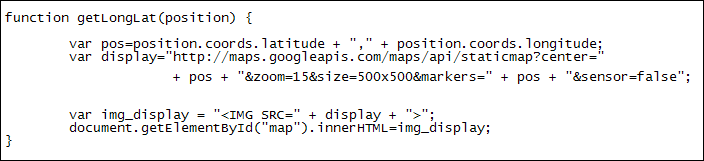

Geolocation and Google Maps
This lesson continues from the previous one.
Now that we have a pair of coordinates, we can use them with the Google Maps API (Application Programming Interface). The API we'll use is called staticmap. This is one of the easier Google mapping APIs to get to grips with. It uses something called a querystring to get the various options available to you.
Querystrings
A querystring is way to get information using a key/value pair. Here's an example of a key/value pair:
sensor=false
In the querystring above, sensor is the key and false is the value. The two are separated by an equal sign, with no spaces between the two. (The sensor key is required if you're using Google's static maps. A value of false means you're not updating the information - you just want the data once.)
Two querystrings are separated from each other with the ampersand character (&). For example, there is a size key that takes a height and width as its value. To separate the two querystrings you do this:
size=500x500&sensor=false
To keep things simple, we'll use three other keys: center, zoom, and markers. The center key is required. Its value can be a pair of latitude and longitude coordinates separated by a comma, or an actual address (center=Chicago).
The zoom key refers to how much detail you want display. A zoom value of 0 means you want to view the whole world; a value of 21, the highest, means you want to zoom in really close. The zoom key is required if you miss out the markers key.
The markers key refers to the position marker over the coordinates you want. This can be quite complicated so we urge you to study the documentation, here:
https://developers.google.com/maps/documentation/staticmaps/#Markers
We'll keep it simple, though, and just add our latitude and longitude coordinates again.
So here's the whole thing:
var pos=position.coords.latitude + "," + position.coords.longitude;
var display="http://maps.googleapis.com/maps/api/staticmap?center=" + pos + "&zoom=15&size=500x500&markers=" + pos + "&sensor=false";
Let's break that down a bit.
The first line just joins our two coordinates together, separated by a comma. The comma goes between quote marks (single or double). There must be no spaces between your comma and your quotes.
The second line is where we return the Google map. The first part is this:
http://maps.googleapis.com/maps/api/staticmap?
The question mark at the end means that a querystring follows. Our querystring itself is this:
center=" + pos + "&zoom=15&size=500x500&markers=" + pos + "&sensor=false";
The double quote marks after center= is matched to the first one before http:
"http://maps.googleapis.com/maps/api/staticmap?center="
We need to do this because our coordinates are held in a variable. If you put quote marks around a variable Javascript treats it as a string and just prints the variable name rather than its contents.
Next we have:
+ pos +
This concatenates the pos variable with the rest of the string. The next part is this:
"&zoom=15&size=500x500&markers="
So we're setting the zoom level to 15 and the size to 500 by 500. The markers are the same as the values in the pos variable. In other words, put a position marker over the latitude and longitude coordinates. Finally, we set sensor to false.
When Google has finished with your querystring it will return an image with the map you requested. Our image is being held in the variable we called display. We need to add this to an IMG tag and place it in the BODY of the HTML. The next two lines do that:
var img_display = "<IMG SRC=" + display + ">";
document.getElementById("map").innerHTML=img_display;
The first line creates the HTML image element, with the display variable as the source. The second line uses innerHTML to add the image to the page.
The whole of the getLongLat function should look like this:

Make sure you're online and test it out in your browser. If all went well you should see a map displayed for your current location.
In the next section, we're going to take a look at using Javascript with the
HTML5 canvas.